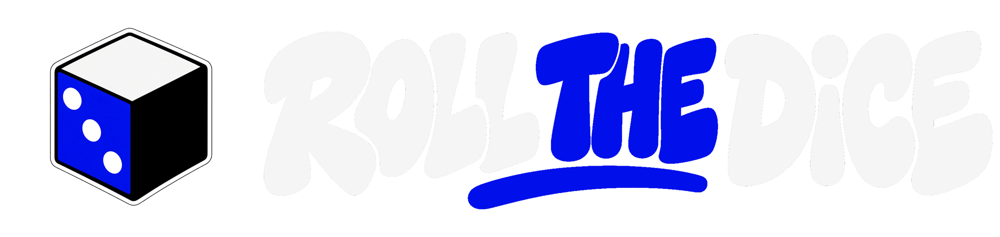
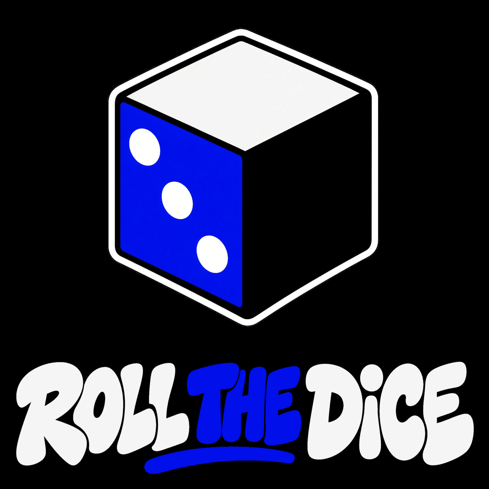

Tracks from your selected discovery genre and saved taste preferences.
Use 1–5 stars to steer future picks. Five stars increases the chances of related tracks, three is neutral, and one reduces their chances. Move the Discovery slider towards Surprise me for more random picks. Use Undo to return to the previous track.
Suggestions use subgenre, listing details and your saved preferences. Prefer compatible keys gives a small boost to exact and nearby Camelot matches. Key labels show whether the source is the uploader or an audio estimate.
You can reopen this guide using the Guide button.
These preferences shape personalised discovery. They are separate from the artists you follow in Favourites.
Choose several to enable Mix my favourite genres. Your current discovery genre stays unchanged.
Up to eight artist names, separated by commas. These guide your taste preferences; they do not follow those artists.